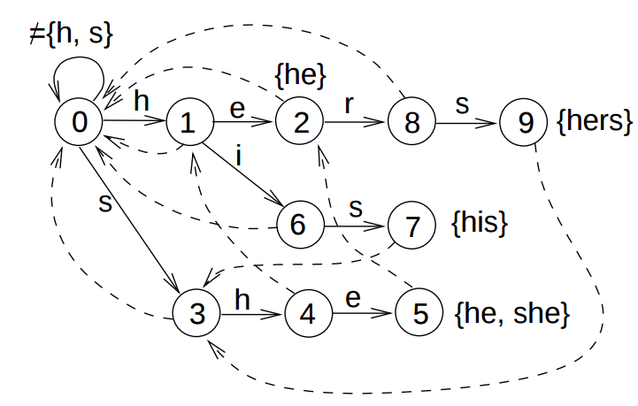

| Prev | Next |
Applications of Deterministic Finite State Automata
There are several real-life applications of DFA. We discuss a few here.
A. Divisibility of binary numbers
One of the simplest applications for DFA is find if a binary number is divisible by a certain number.
1. Design a DFA that will accept binary strings that is divisible by 3. Σ = {0, 1}
How do we go about this?
Step 1: Given a binary string, if we divide it by 3, it will leave one of the three reminders: 0, 1 and 2. So we define a state for each reminder.
- Rem 0 denotes binary strings: ε, 0, 11, 110, 1001, ..... (i.e. 0, 3, 6, 9, ....).
- Rem 1 denotes binary strings: 1, 100, 111, 1010, ..... (i.e. 1, 4, 7, 10, ....).
- Rem 2 denotes binary strings: 10, 101, 1000, 1011, ..... (i.e. 2, 5, 8, 11, ....).
Step 2: Since we want to accept strings that are divisible by 3, Rem 0 is the final state.
Step 3: Before we start reading any symbol, we are in "Rem 0" state since the value read so far is 0. Therefore, the start state is "Rem 0".
Step 4: Defining transitions
To define transitions, we use the following fact of binary numbers.
- When you append a 0 to a binary string, the value doubles. (k → 2k). Few examples below to drive home the point.
- When you append a 1, the value changes from k to 2k + 1. Few examples below to drive home the point.
- 11 (value 3) → 110 (value 6)
- 101 (value 5) → 1010 (value 10)
- ε (value 0) → 0 (value 0)
- 11 (value 3) → 111 (value 7)
- 101 (value 5) → 1011 (value 11)
- ε (value 0) → 1 (value 1)
- At state Rem 0
- At state Rem 1
- At state Rem 2
Read 0: The value doubles and hence continues to be divisible by 3. Remain in the same state.
Read 1: The new value leaves a reminder 1. Move to state Rem 1.
Read 0: The value doubles and the reminder also doubles. So, move to state Rem 2.
Read 1: The new value increases by 2k + 1 leading to reminder 3 = remainder 0. So move to Rem 0.
Read 0: The value doubles and the reminder also doubles leading to reminder 4 = reminder 1. So, move to state Rem 1.
Read 1: The new value increases by 2k + 1 leading to reminder 5 = remainder 2. So remain at Rem 2.
2. Design a DFA to that will accept binary strings that is divisible by 4. Σ = {0, 1}
(a) This can be done in same way as above. It is left as an exercise.
(b) There is also another way to design the DFA. All binary strings that end with "00" are divisible by 4. Design a DFA based on this logic. This is left as an exercise.
(c) Compare the DFAs obtained in both ways? Are they similar (despite the fact that the first one has 4 states and the second one has 3 states)?
3. How would you design a DFA for binary strings that are divisible by 6?
This can be approached in two ways.
Approach 1: Implement in the same manner as problem 1.
Approach 2: Since 6 is divisible by 2 and 3, you can first implement DFAs for divisibility by 2 and 3 and perform a cross product of both.
Try both these approaches and check if you get the same DFA. This is left as an exercise.
B. Pattern Matching
Another prominent application of DFA is in text processing. We discuss three application scenarios:
- Exact pattern matching
- Approximate pattern matching
- Search for multiple patterns
1. Find the number of occurrences of pattern P = abab in text T = aababababba.
Given a text T and pattern P, the problem is to find if P appears in T. And, if it appears, how many times it appears? A DFA can be constructed over the pattern and the text T can be run over the DFA. Whenever final state is reached, the repeat count is incremented.
We can design a DFA for the pattern "abab" in the same manner we discussed. The DFA is given below.
Each state is named by part of the pattern that has been observed so far. We initialize a variable count to 0. The count will be incremented whenever the final state abab is reached.
δ(ε, aababababba)
= δ(a, ababababba) [count = 0]
= δ(a, babababba) [count = 0]
= δ(ab, abababba)
= δ(aba, bababba)
= δ(abab, ababba) [count = 1]
= δ(aba, babba)
= δ(abab, abba) [count = 2]
= δ(aba, bba)
= δ(abab, ba) [count = 3]
= δ(ε, a)
= δ(a, ε)
= a
Thus the number of occurrences can be computed as 3. With additional logic over the DFA, the start positions of the pattern can be computed too. The famous Knuth-Morris-Pratt (KMP) algorithm provides a way to compute the DFA for the pattern in time linear to its length.
2. Finding approximate patterns with bounded distances
DFAs can also be used to detect approximate patterns or similar strings with bounded distance. As an example, let's consider the same pattern "abab". Assume that we want to identify strings that are closer to it by a distance of 2 at max. Some strings that satisfy the condition are ??abab, ?a?bab, ?ab?ab, ?aba?b, ?abab?, a??bab, a?b?ab, ..... where ? denotes that any character other than one expected is encountered.
The DFA for this scenario is given below. The states are named as follows: di=j denotes the fact that the distance differs by j characters with i differences so far. The states with distance j <= 2 are marked as final states.
3. Finding multiple patterns in the same text
Yet another application of DFA in text processing is finding the occurrences of multiple patterns in a text. Aho-Corasick algorithm provides an approach to construct DFA (referred to as Aho-Coracisk automaton), to simultaneously search for multiple patterns. The automaton constructed for the patterns {he, she, his, her} is given below. The image is from Slide 9 of Set Matching and Aho-Corasick Algorithm by Pekka Kilpelainen.
C. Vending Machine
DFA can be used to model real-life scenarios. Here, we see how a vending machine is modeled using DFA. A vending machine accepts inputs in the form of coins or denominations and dispenses items based on the total amount collected and the selection made by the customer
The DFA below is an example of a vending machine that accepts coins of two denominations 5 and 10 and selection of three items Tea, Cookie and Coke that costs Rs. 15, Rs. 20 and Rs. 25 respectively. Although, the state machine could be designed in an elaborate manner, this one gives a fair idea how it can be used to design a real-life scenario.